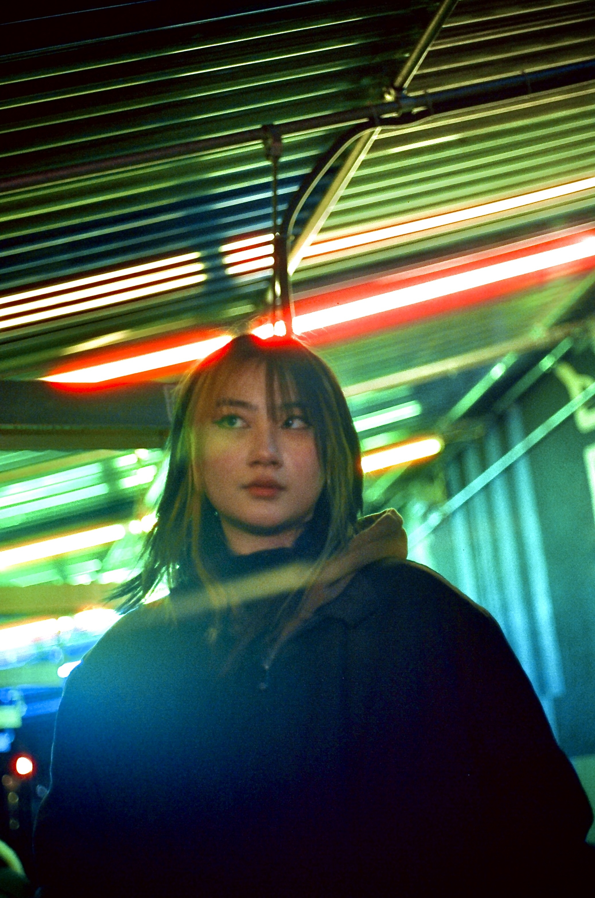

About Shasuna Lin

Shasuna Lin is a Computer Science and Emerging Media major at Hunter College. She is an aspiring programmer and digital designer who will utilize various coding languages and digital graphics software such as Blender and Autocad to create work that incorporates surrealism and realism in 3D renderings. She uses technology as a medium because it has a wide spectrum of creativity and can be much more interactive through personal devices. She takes inspiration from the human body and adds elements of surrealism to illustrate her feelings and personal life. Some of her digital work includes themes of self-imagery, womanhood, and motherhood using grotesque nudity and colors.Shasuna draws inspiration from her personal life and familial relationships to express her life through these artworks. Influences for her work take inspiration from a wide range of horror/sci-fi/nature films and video games such as Last of Us and Coraline. She also enjoys animated films from her childhood from Disney, Pixar, and Nickelodeon. Shasuna Lin aspires to use programming languages to expand upon her work and includes interactive elements in her digital work. In addition to creating 3D works of self-expression, she is interested in using her skills for commercial use to create programs and digital designs for consumers. She hopes to create visually attractive infographics to inform people of products and help them easier navigate websites. Shasuna is also interested in developing programs and new technologies to improve people’s lives and internet experiences. Both front-end and back-end development interest Shasuna and she is passionate about learning and expanding upon her work.